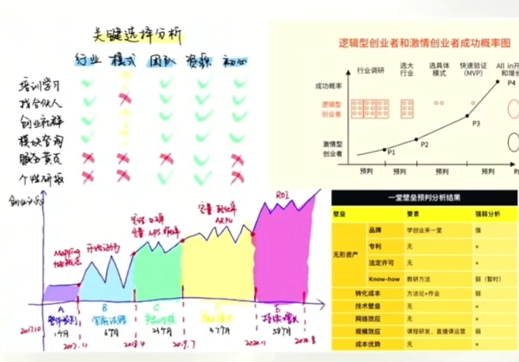
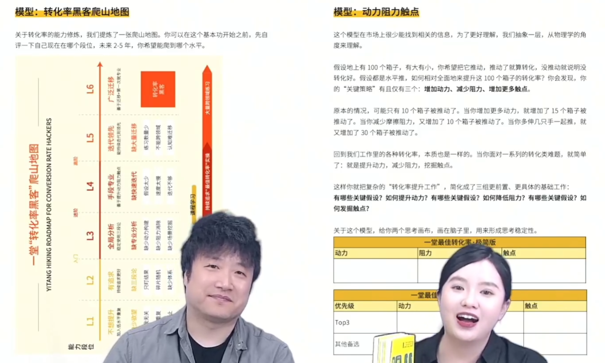
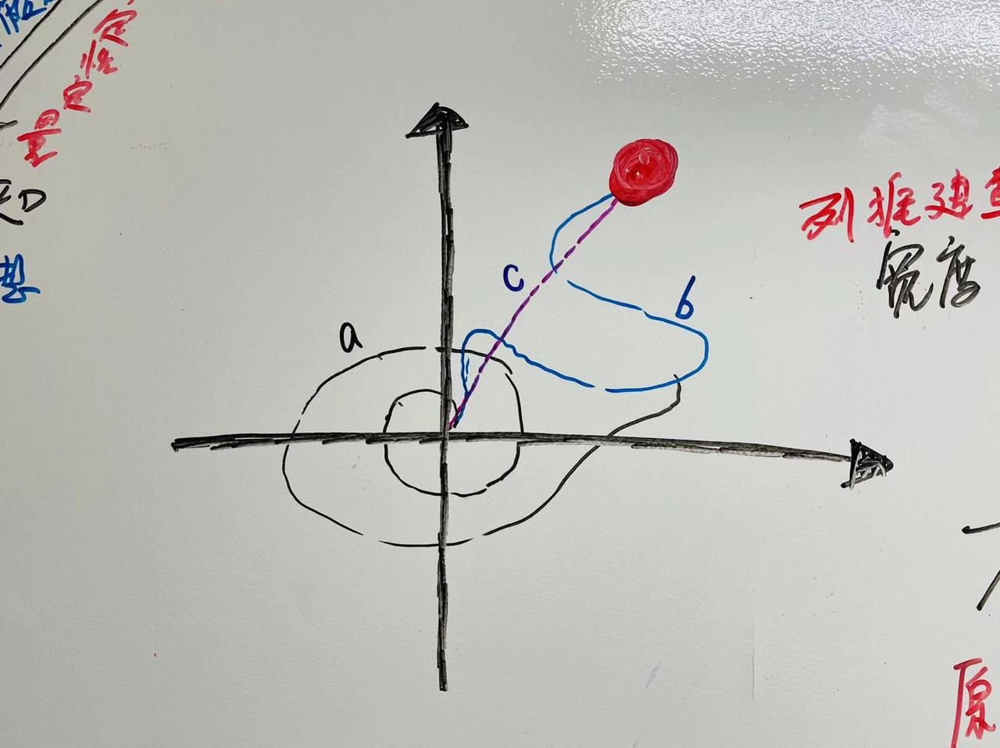
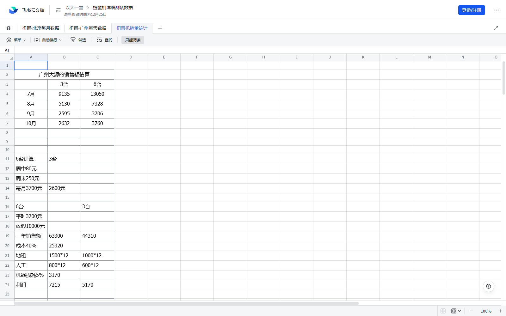

Authenticated learning coverage
一堂课程与 AI 教练完整性审计
核对当前账号可见课程、课内条目、Candy、课件图片和四类 AI 教练流程。数字只表示可验证的本地覆盖，不把权限外内容写成已学习。
审计日期 2026-07-15
!
范围边界：五个课程页均显示课程/作业完成与 Candy 解锁；账号底层字段仍为已选 2、已完成 2、非会员。其余 171 门没有正文访问依据，因此不声称已学习。
+
补充课程：《聪明精益：张磊的 3 个业务实验》作业已提交（answerId 1680021），3 个 Candy、4 篇文档和飞书表格 3 个工作表已完成本地学习覆盖；该课程独立记账，不改写“我的课程”5/176口径。
当前课程
课程页状态与本地成果交叉核对
| 课程 | 课内条目 | 平台信号 | 本地覆盖 | 状态 |
|---|---|---|---|---|
| 创业者技能树 | 12 主课 / 0 Candy | 完成课程；Candy 页已解锁、无条目 | 12 个图文小节、来源索引、图像缓存 | 完成 |
| AI 新范式篇 | 4 主课 / 5 Candy | 完成作业；课件与 AI 教练已学完 | 259、五步法、关键假设、双三角、科学四词、案例与受保护课件图 | 完成* |
| 科学决策审美篇 | 3 主课 / 3 Candy | 完成作业；两节回放已学完 | ROI 三角、案例集、20 张画布、长期路径与 AI 落地 | 完成 |
| 人生红点认知篇 | 1 主课 / 1 Candy | 完成作业；回放已学完 | 核心模型、3 张图、匿名化 Candy、作业与教练反证测试 | 完成 |
| 一堂课程学习地图 | 2 主课 / 4 Candy | 完成作业；Candy 已解锁 | 方法论/案例地图、64 张 Candy 图和独立离线包 | 完成 |
* AI 新范式飞书正文在当前结构化采集器中仍为部分可读；已有历史笔记、完整大纲和受保护课件图补足摘要级覆盖，不把当前不可稳定提取的原文伪报为重新抓取完成。
AI 教练状态机
按真实网页流程逐轮完成，不使用越过问题的预设脚本
新人第一课教学官
报告完成- 身份与画像
- 热身与双三角
- 259 / 五步法
- 关键假设与验证
- 科学体系
- 覆盖门槛与诊断报告
学习重点：当前问题、答偏纠正、四模块覆盖账本、证据不足不出报告。
科学决策搭档
备忘录完成- 决策与价值
- 选择分析深度
- 并行方案画布
- 主要矛盾
- 纠偏与高度扫描
- 停止/继续/加注/切换
学习重点：方案可以是主辅组合；用户挑战绝对结论时降级为假设，并列新证据更新条件。
人生红点架构师
边界完成- 背景与关键选择
- 高峰与低谷
- 榜样与未来画面
- 真实取舍
- 反证与替代解释
- 候选报告
学习重点：长期方向是候选假设，不锁定身份；保护情绪安全，并用可逆行为实验复核。
Truman For复盘营
总结信完成- 复盘契约
- 起心动念与使用瞬间
- 投入 / 价值镜像
- 长期后果与阻力
- 30 分钟最小体检
- 对象、期限与结果回传
学习重点：一轮一问、固定主线、行动回传；本地实现压缩过度肯定，分离销售转场，并增加实验伦理护栏。
视觉证据
图片记录“支持什么”和“不能证明什么”







本地成果
全部可离线打开，不写回个人主页
学习资料
不可越过的缺口
- 平台总目录 176 门，当前“我的课程”只显示 5 门。
- 其余 171 门没有正文、Candy 和图片访问证据。
- 账号字段 2/2 与五个课程页完成横幅不一致，审计保留冲突。
- 本地保存的是原创摘要与证据索引，不是付费课逐字稿。